Overview
Worlds of Hello is a health and education technology platform that helps children continue therapist-guided speech practice at home using familiar voices. Parents and caregivers can contribute their own voices, while the platform also offers a broader community voice library for families to choose from.
The idea grew from the founder’s experience helping her nephew continue speech therapy during COVID after he lost access to his therapist. She noticed that hearing a familiar voice helped him engage with the exercises, which became part of the foundation for the product.
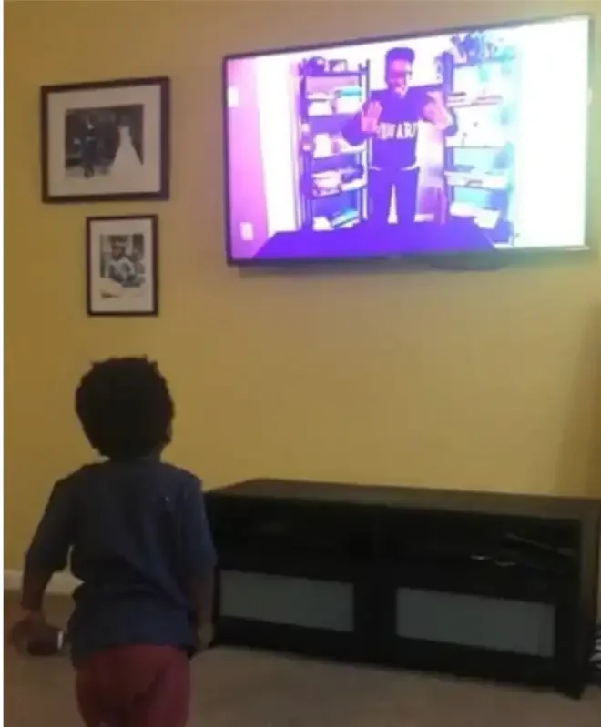
That experience also reflected a broader problem of access. Speech and language needs can be identified late, and families may still struggle to find affordable or culturally relevant support once they know help is needed. Worlds of Hello was built for families broadly, with particular attention to making continued practice more accessible between clinical sessions.
The Product
Worlds of Hello was split into two connected applications.
The therapist app supported the clinical side of the experience. Speech-language pathologists (SLPs) could manage clients, assign activities, review progress, and work with session documentation. AI-assisted tools could transcribe recorded sessions and help turn recordings or written notes into structured clinical documentation, reducing some of the administrative work surrounding each session.
The family app extended that work into the home, handling the child’s experience. Children completed therapist-guided activities using familiar voices contributed by parents, caregivers, or selected from the platform’s broader voice library. The interface was intentionally playful, with warm colors, gamified interactions, and child-friendly characters.
Most of my work was on the family application, although I also contributed to therapist-facing flows.
My Role
I joined Worlds of Hello as a frontend developer, working on a two-person implementation team with my manager. My first assignments were design-to-code work: I received Figma screens, learned the existing Flutter codebase, and implemented the interfaces within the patterns already established in the project.
The codebase used a DTO, DAO, repository, and BLoC architecture, so even early screen work required me to understand more than the widget layer. I had to trace how data, application state, and navigation moved through each feature before I could implement it correctly. I used AI development tools to inspect patterns in the existing code and understand how features had been structured before making changes. In one of my first major code reviews, my manager specifically praised how quickly I had adapted to the architecture he had established. We worked in sprints, with features assigned through tickets and reviewed via pull requests.
My scope expanded as I became more familiar with the product. I started receiving features that required design work in Figma before I implemented them in Flutter. By later sprints, I was moving between Figma, Flutter development, Supabase voice metadata, and Python scripts supporting the ElevenLabs workflow depending on what the product needed.
Across the internship, I worked on authentication and onboarding, avatar and photo capture, parent video recording, the home experience, settings, SLP connection flows, community voices, and voice asset preparation. I also worked on therapist-side features near the end of the internship, including caseload search and session-note actions, although that work had not been merged before the project period ended.
Frontend Development
My first substantial feature was the redesigned authentication and onboarding flow. I implemented sign-up and sign-in across the different ways a family could enter the platform, including the path where an SLP provided them with an access code. The work included code validation, account creation, modal states, custom PIN input behavior, routing changes, and responsive layouts.
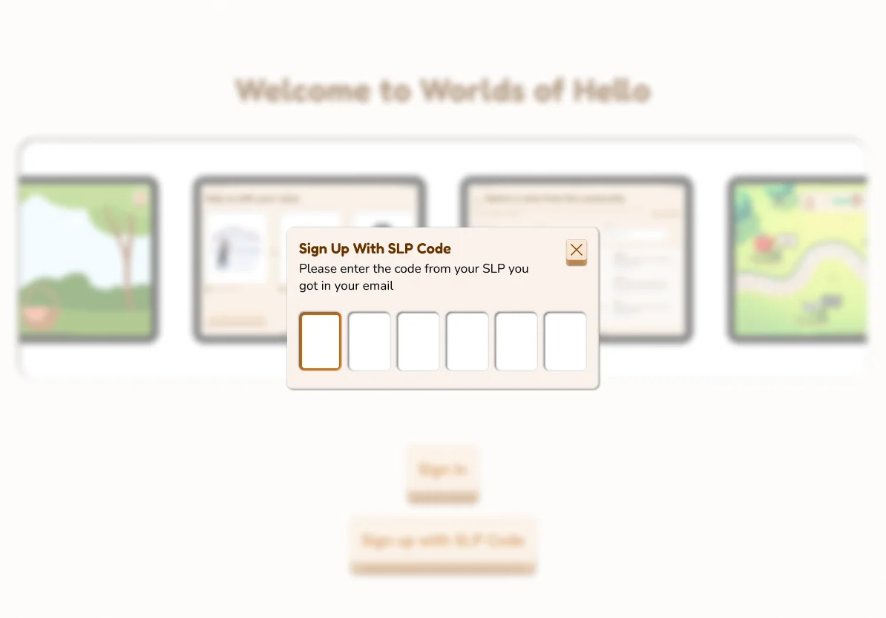
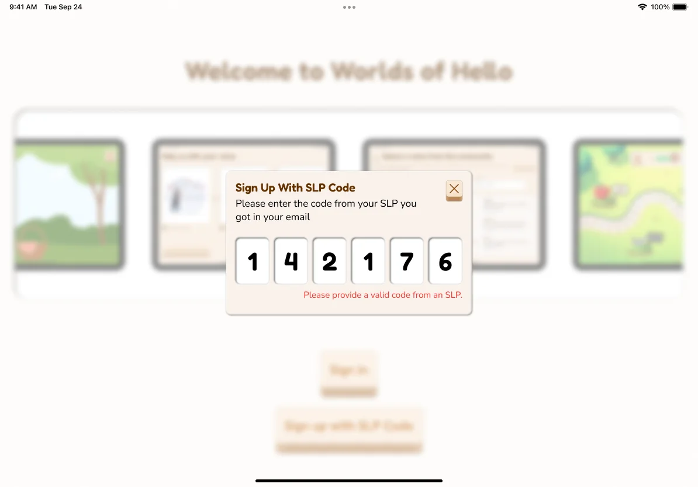
The review process helped me learn the product’s design and engineering conventions quickly. Some of my early revisions involved switching components to the existing design tokens, changing a full-page interaction into a modal, following the project’s established responsive patterns, and adjusting interface details to match updated Figma designs. Those reviews gave me a much clearer sense of how the design system and codebase were meant to work together.
I later worked on avatar selection and photo capture, the home screen, settings, and SLP connection management. The settings work included child profile settings, a multi-state SLP connection interface, code verification, and confirmation states for destructive actions.
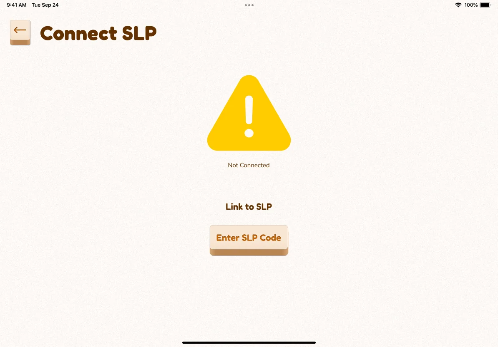
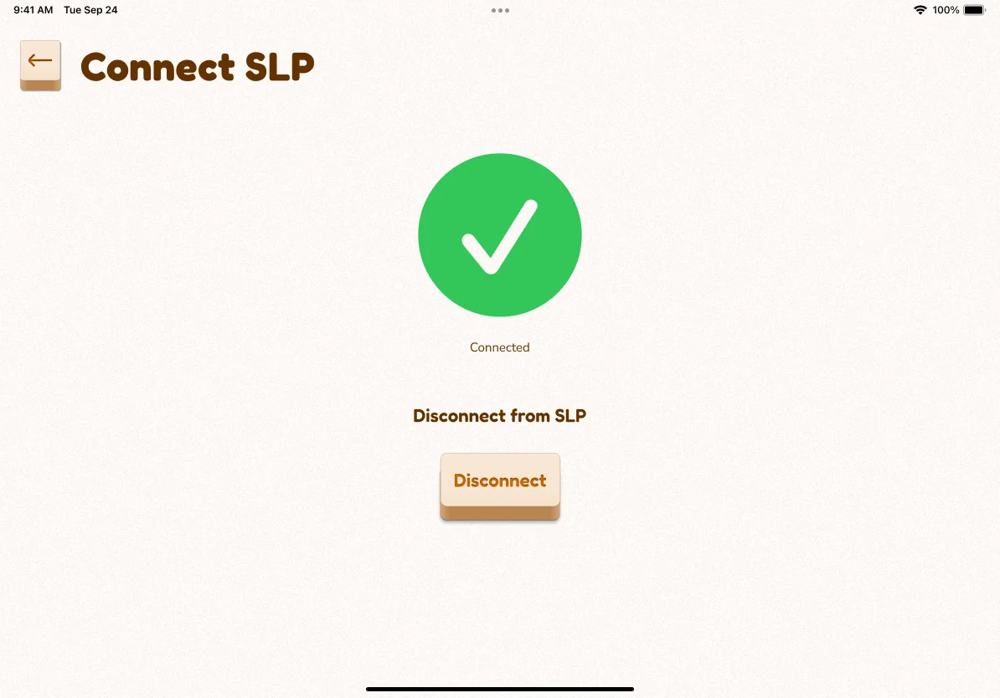
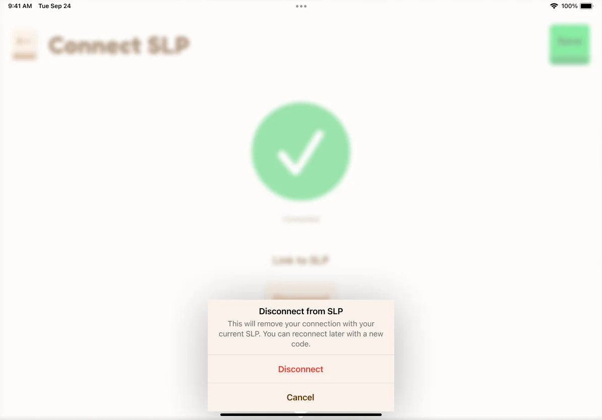
My responsibilities were not limited to implementing existing designs. I designed the feature-card layout for the redesigned home screen and then built it in Flutter.
Some of the work also moved on a tighter schedule because the product was being used in fundraising and pitch conversations while we were still building it. What I shipped would become part of the versions my manager and the broader team were presenting externally.
Video Recording
The parent video-recording flow was one of the most technically demanding frontend features I worked on.
The challenge was not getting a camera feed onto the screen. The recording experience had been designed with a specific visual treatment, including a circular camera frame and custom controls that needed to behave differently depending on the recording state. I used CameraAwesome and worked through its documentation to understand how much of the default camera interface I could replace or restructure.
The final experience supported separate states for recording, pausing, stopping, redoing, and completing a recording. The camera appeared within a circular frame with instructions guiding the parent to keep their face positioned correctly.
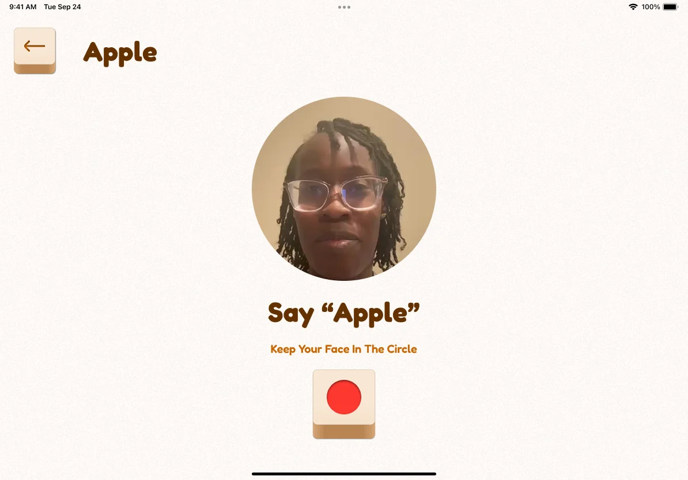
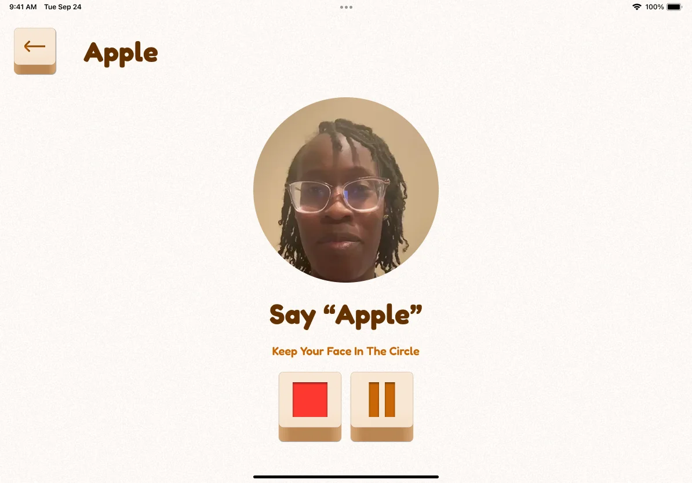
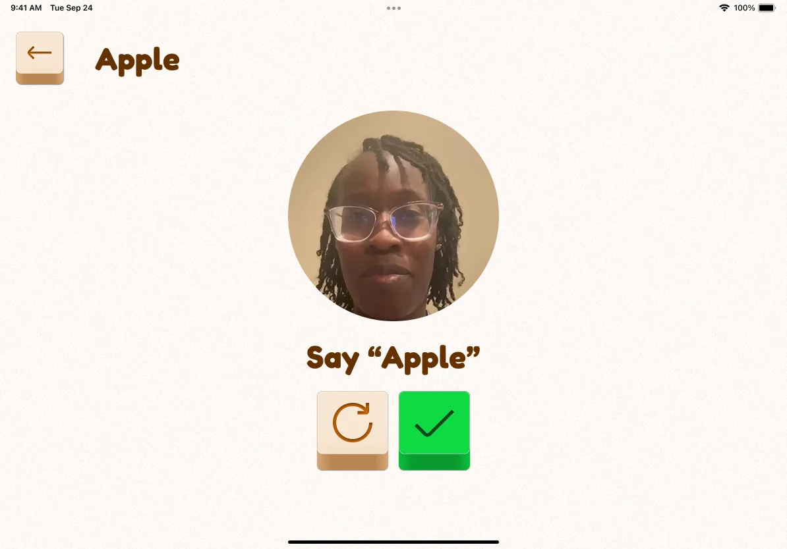
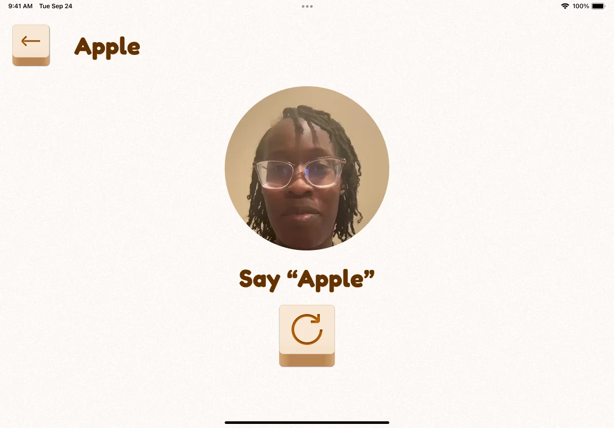
Getting there took several iterations in the repository. Earlier recording branches were closed while I continued refining the implementation, and the completed video-recording lesson flow was eventually merged on June 26.
This feature made the difference between a finished interface and a working interaction especially clear. A recording screen can look simple in Figma, but its implementation has to account for camera state, permissions, frozen frames, control changes, layout constraints, and what happens when a user pauses or starts over.
Designing Within AI Constraints
One of the most important constraints behind the child experience was how much freedom the cloned voice was allowed to have during a lesson.
The platform did not generate lesson dialogue live. Each voice was used to produce approved lines ahead of time, then rule-based logic determined which recording played during each part of an activity. Audio was prefetched where possible, with an on-demand fallback when a clip was unavailable. ElevenLabs audio tags helped control the emotion and intonation of those recordings.
My manager established this approach, and I worked within it while building the experience. The constraint made sense once I understood the user. A wrong line from the model was not just a technical error. It could interrupt an exercise or make a voice that was supposed to feel familiar suddenly behave unpredictably.
That changed how I thought about AI in a product. More freedom from the model would not have made this experience better. The design depended on knowing when the system would speak, what it would say, and how that line should sound. Predictability was part of the experience we were designing for the child.
Building the voice library
By the later sprints, I was also working directly with the voice library behind the interface. The dataset I worked with contained 120+ voice records, with metadata covering fields such as language, accent, gender, age, and voice descriptions. Because some records were incomplete or categorized inconsistently, I cleaned and organized the data in Supabase, corrected metadata, and checked that the application had the information it needed to surface the voices correctly.
I also wrote Python scripts for parts of the ElevenLabs workflow and attached the corresponding metadata to generated voice assets. That work fed into the Community Voices feature, where I created and uploaded voice samples, updated the application to use the new community voice model, worked on its repository integration, and redesigned the card and filtering interface. My manager made additional fixes to the fetching and filtering logic before the feature was merged.
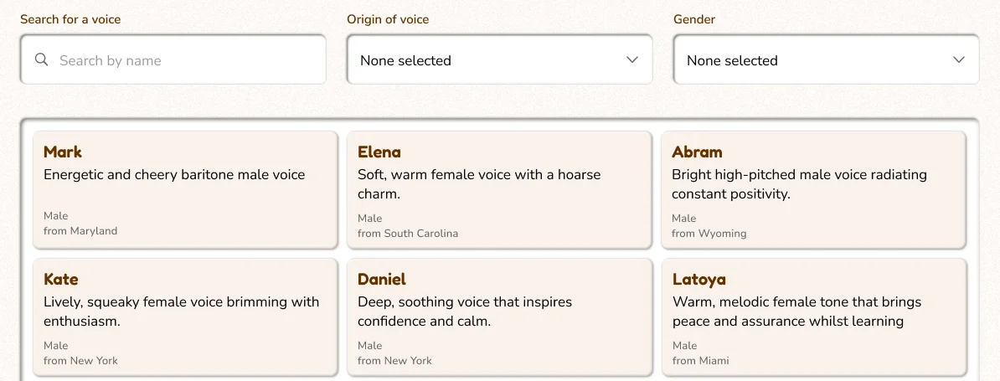
Outcome
Worlds of Hello continued into further research and product testing after the summer development period. An NSF SBIR Phase I grant supported prototype development, testing with parents, educators, and speech-language pathologists, and technical refinement of the platform. The team also participated in the 2025 MITRE RISE Accelerator.
The Community Voices library later grew to 170 voices across more than 10 accent categories. Research with 19 caregiver-child pairs and 33 speech-language pathologists found that 75% of caregivers felt culturally represented through the voice library, while internal testing reported a 49% higher activity completion rate in experiences using familial voice clones.
The work was published in the ACM Digital Library as Culturally Representative AI Voices for Equitable Pediatric Speech Therapy: Design and Preliminary Evaluation, in the proceedings of GoodIT ’26, the 2026 International Conference on Information Technology for Social Good. I am a co-author, with Donell Mtabvuri and Amy Quarkume.
Reflection
Worlds of Hello changed how I understood frontend work because the interface was only one part of what I needed to understand to build a feature well. I started the summer focused mainly on translating Figma designs into Flutter, but the work gradually pushed me into the systems underneath those screens and the decisions that shaped their behavior. That perspective has stayed with me in later design work, where I now pay much more attention to the assumptions, data, and technical constraints behind an interface.
I also came away with a more practical view of AI product development. I learned that the useful question is not how much AI can be exposed to the user, but how much control the experience requires. That has become a standard I carry into my design work now.